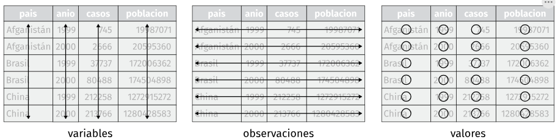

En R se pueden subir archivos de diistintos tipos (xlsx, xls, csv, txt, etc…). En los datos tabulados, generalmente las columnas son variables y las filas son observaciones o individuos de esas variables.
Sin embargo, los formatos que puede leer R por defecto son .txt y .csv, para cargar archivos de otro tipo se requieren de otras librerias como readr.
Las columnas se separan con un carácter y las filas con un salto de línea. Este carácter puede ser un espacio, un tabulador, una coma, punto y coma etc. El formato más extendido es el CSV, donde las observaciones están separadas por comas.
Las funciones para la importar de datos se listan en la siguiente tabla:
Funcion
Tipo de datos de carga
Ejemplo
read.table()
Se usa para cargar archivos en formato .txt. Los principales argumentos de esta función son la ruta y el nombre del archivo (entre comillas), un argumento que le dice a R si los datos tiene un encabezado header = TRUE o no header = FALSE y el delimitador de los datos (argumento sep)
Cuando se empieza a trabajar con un conjunto de datos, es necesario hacer un poco de exploración para entender qué información puede contener. Existen varias formas de extraer información básica de un objeto, ya sean listas, matrices, data frames o cualquier otra clase. Para observar como realizar estos procesos se usarán sets de datos que R trae por defecto.
Algunos comandos ya mencionados en secciones anteriores funcionan con todas ellas, particularmente la funcion str(). Otros como colnames() o rownames() solo sirven para objetos de dos dimensiones (como matrices).
5.1.1 Iniciando
Lo primero que se debería hacer al importar o crear un set de datos, es visualizar que la información de este haya sido correctamente cargada. Para esto se puede hacer uso de la función head() o tail(), para observar las primeras o últimas 6 filas del set de datos.
La función View() también es muy útil para inspeccionar la tabla completa:
View(iris)
La función names() devuelve los nombres de los elementos de una lista, lo mismo funciona con los data frames. Resultado similar a la función names() es posible algunas veces con la función colnames() la cual retorna el nombre de las variables (columnas) del set de datos.
NoteNombres de las variables
Como resultado obtenemos un vector de caracteres con los nombres de las variables o columnas del set de datos
Como ya se ha mencionado anteriormente la función genérica str() es muy práctica para la obtención de información básica y resumida de cualquier objeto, incluyendo los data frames.
Otra función importante para comprender el dataset es la función summary() la cuál proporciona un sumario o resumen de un objeto.
NoteResumen de datos
summary(iris)
Sepal.Length Sepal.Width Petal.Length Petal.Width
Min. :4.300 Min. :2.000 Min. :1.000 Min. :0.100
1st Qu.:5.100 1st Qu.:2.800 1st Qu.:1.600 1st Qu.:0.300
Median :5.800 Median :3.000 Median :4.350 Median :1.300
Mean :5.843 Mean :3.057 Mean :3.758 Mean :1.199
3rd Qu.:6.400 3rd Qu.:3.300 3rd Qu.:5.100 3rd Qu.:1.800
Max. :7.900 Max. :4.400 Max. :6.900 Max. :2.500
Species
setosa :50
versicolor:50
virginica :50
5.2 Procesos básicos de dplyr
Tenga en cuenta que todas las funciones que se presentan a continuación requieren datos ordenados, lo que significa que:
Cada variable está en su propia columna
Cada observación, o caso, en su propia fila
Cada valor está en su propia celda

Procesos dplyr, fuente: Tampa Bay
A continuación se pueden ver las cinco funciones básicas clave de dplyr las cuales permitirán resolver la mayor parte de los retos de manipulación de datos.
La función filter() permite subdividir las observaciones en función de sus valores.
Funcion
Proceso
filter()
Selecciona las observaciones segun una o varias caracteristicas especificas
arrange()
Reordena las filas
select()
Selecciona variables por sus nombres
mutate()
Crea nuevas variables con funciones o variables existentes
Todas las funciones presentadas en esta sección deben especificar el nombre del objeto de datos como primer argumento. Sin embargo, existe una solución alternativa a la especificación del nombre del marco de datos dentro de las funciones: el pipe operator (|> o %>%).
Este permite realizar una secuencia de varias operaciones, es decir, encadenar una secuencia de cálculos. Resulta especialmente útil cuando se realizan varias operaciones sobre un objeto de datos y no se desea guardar la salida en cada paso intermedio.
Con ayuda de la librería dplyr es posible extraer observaciones según su posición o sus valores. Para este proceso se puede hacer uso de la función slice()
NoteExtracción de observaciones
# Extraccion segun su posicion# Extraemos los datos de las filas 10, 20 y 25iris |>slice(c(10, 20, 25))
Mediante el uso de esta librería también se pueden organizar las filas según el criterio. La función arrange() funciona de manera similar a la funcion filter. Esta toma el data frame y un conjunto de columnas y los ordena según las características de este.
Muchas veces sólo es necesaria la información ciertas observaciones dentro de una tabla, para esto hay que tener claros los criterios de la investigacion que se esté realizando. La función subset() sirve para este proceso.
En cuanto a la modificación de datos, existen múltiples posibilidades. Algunas de ellas son:
rename() cambia el nombre de la columna
mutate() cambia los valores de las columnas y crea nueva columnas. La función transmute() funciona igual a mutate(), pero la tabla de datos resultante solo contiene las nuevas columnas.
Existen diferentes funciones que pueden ser usadas de manera conjunta con la función select()
Funcion
Descripcion
containis()
Selecciona variables cuyo nombre contiene la cadena de texto
ends_with()
Selecciona variables cuyo nombre termina con la cadena de caracteres
everything()
Selecciona todas las columnas
matches()
Selecciona las variables cuyo nombre coinciden con una expresión regular
num_range()
Selecciona las variables por posición
one_of()
Selecciona las variables cuyos nombres están en un grupo de nombres
start_with()
Selecciona las variables cuyos nombres empiezan con cadenas de caracteres
5.3.3 Operaciones de agrupación
La primera operación de resumen que puede surgir es “contar” filas. La función tally() devuelve el número de filas totales de un data.frame. La función count() proporciona también este número.
Notetally function
iris |>group_by(Species) |>tally()
# A tibble: 3 × 2
Species n
<fct> <int>
1 setosa 50
2 versicolor 50
3 virginica 50
Para observar un resumen de las variables de manera detallada y según los argumentos que el usuario desea se usa principalmente la función summarise()
La combinación de tablas en R funciona de manera muy similar a como se realiza en otros programas. En esencia para combinar tablas que contienen información relacionada, hay que saber cuáles son las columnas que refieren a lo mismo, para realizar uniones mediante joins. Existen cuatro tipos de uniones que se pueden realizar.
inner_join() incluye las filas de ambas tablas para las que coinciden las variables de unión.
left_join() incluye todas las filas de la primera tabla y solo las de la segunda donde existen coincidencias.
right_join() incluye las filas de la segunda tabla y solo las de la primera donde existen coincidencias.
full_join() incluye todas las filas de las dos tablas.
Las funciones requieren como argumentos dos tablas de datos y las especificaciones de columnas coincidentes.
NoteFunciones join()
A <-data.frame(id=c(1,2,2,3),cod=c(23,65,60,87),name=c("Leia","Luke","Yoda","Hank"))B <-data.frame(id=c(2,3,4),cod=c(65,87,29),age=c(23,20,25))
A |>inner_join(B)
Joining with `by = join_by(id, cod)`
id cod name age
1 2 65 Luke 23
2 3 87 Hank 20
A |>left_join(B)
Joining with `by = join_by(id, cod)`
id cod name age
1 1 23 Leia NA
2 2 65 Luke 23
3 2 60 Yoda NA
4 3 87 Hank 20
A |>right_join(B)
Joining with `by = join_by(id, cod)`
id cod name age
1 2 65 Luke 23
2 3 87 Hank 20
3 4 29 <NA> 25
A |>full_join(B)
Joining with `by = join_by(id, cod)`
id cod name age
1 1 23 Leia NA
2 2 65 Luke 23
3 2 60 Yoda NA
4 3 87 Hank 20
5 4 29 <NA> 25
5.5 Ejercicio de recopilación
En este ejercicio, se utilizará el dataset senshu.rice de la librería agridat.
Utiliza la función help() para obtener más información sobre el contenido de este dataset.
Usa la función summarise para calcular los valores mínimos, máximos y los promedios.
Cuenta la cantidad de datos por cada uno de los países.
Realiza un filtro de la información del set de datos donde tenga información de Colombia.
Obtén el promedio de la columna yield por cada uno de los países.
Realiza un filtro y selecciona los datos cuyo rad sea menor a 350.
Seleccione las filas 15, 18, 20 35 y 40 del set de datos.